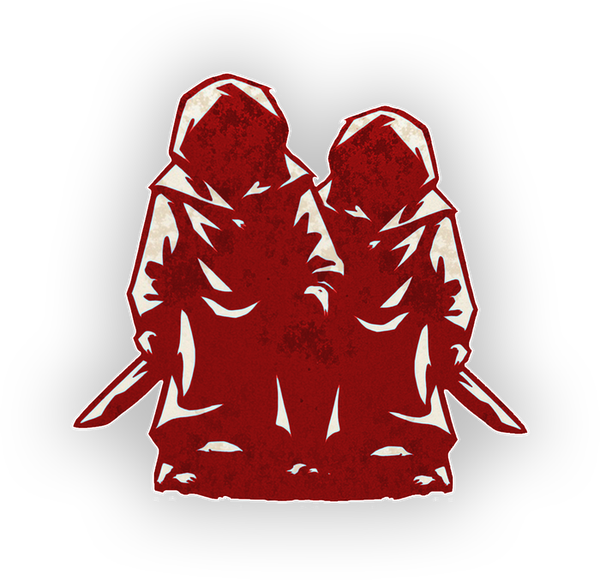

"2 Outsiders are Evil, learn each other, and may lose their abilities (they learn this). [+1 or +2 Outsiders, -1 Folie à Deux]"
The Folie à Deux causes 2 Outsiders to fall into insanity the cost of a Minion.
- Folie à Deux makes town have to do double the work to find a second, isolated evil team.
- The Folie à Deux is not actually in play, so abilities that target by character will miss it, nor can it be drunk or poisoned.
- There will always be at least 2 Outsiders in play. A setup with fewer than two Outsiders and a Folie à Deux is illegal.
- Players must continue to follow their ability rules until they are explicitly told they have lost them. It is still considered cheating to break ability rules if they have lost their ability but haven't been informed.

While setting up the game, remove 1 Minion token and add 1 Outsider Token. You may also remove 1 Townsfolk token and add an additional Outsider token (this is required if there is only 1 Outsider).
At the start of the first night, select any 2 Outsiders, rotate their tokens 180 degrees and add the PAIR reminder tokens. Wake one of the pair and show them the Folie à Deux token and a thumbs down to indicate they are evil, and point to the other member of the pair. Repeat with the other paired player.
If at any point you think a paired player should lose their ability, add the NO ABILITY reminder to them. That night wake the player and show them the NO ABILITY token, even if they are dead.

- Coordinate with your partner in crime! Two heads are better than one. By collaborating, you can spread misinformation and create chaos more effectively.
- You are expendable! Executions are a limited resource for the good team, and every day day you are executed is a day a powerful Minion or the Demon survives, and if you are an Outsider like Barber or Sweetheart it's in your best interest to die.
- Be cautious with your votes and nominations. You never know if the player you're executing is a Evil teamate.
- You are not defined by your ability. Are you the Zealot who wants to hide who you really are? The Storyteller might throw you a lifeline and take away your ability, so you don't have to vote every nomination!
- Look evil, but not too evil. Your goal is to mislead the good team into thinking you are the main threat, taking pressure off your teammates, so act accordingly!

"Two's company, Three's a crowd."
Information
- Type:
- Minion
- Creator:
- dj_dj_dj
- Appears in:
- —
Fan-made content for Blood on the Clocktower · Created by dj_dj_dj · Not affiliated with The Pandemonium Institute